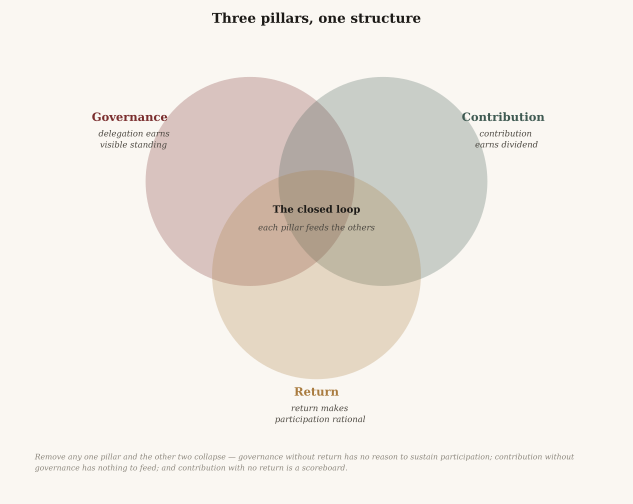

Governance, contribution, and civic return. Today they are three separate systems, and each of them fails for reasons the other two would address.
It repeats in almost every country. A programme one administration introduces, the next can dismantle — regardless of whether it was working. The people who depended on it have no standing to object until the next election, by which time the thing is gone and the evidence with it.
Policy becomes an inheritance dispute between governments rather than a decision a community made and can revisit.
Accountability arrives once every few years, applies to an entire record rather than to any single decision, and cannot be adjusted in the interval.
That gap — between a decision and the people who live with it — is what this project exists to close.
Asks your opinion every few years, then proceeds without you. One blunt instrument, once, aimed at an entire record.
Returns nothing measurable, and is treated as an obligation rather than something a person might reasonably choose. So the expertise already sitting in the community — clinicians, tradespeople, engineers, teachers — never reaches the decisions that need it.
For people who are employed and contributing, there is almost no return. What exists is aimed at low earners and pays according to need, so it pulls back as your situation improves, and each step forward costs some of the support you had. The structure discourages improving your situation and rewards staying put.
Each one is treated as its own field, with its own budget and its own professionals. They share a single cause.
Our re-imagined concept of governance is designed and built to run alongside the current government you already have, not to replace it. Its purpose is to let every resident have a real say and add real value, instead of waiting for the next election. Residents can vote directly on the matters they care about most, or delegate decisions to people they trust on the matters they don't. We offer a mechanism that allows all residents to contribute what they know on any given topic. That contribution goes on a public record, and the effort is rewarded from a community fund. It rewards engagement, holds those in power accountable, and gives communal expertise and resources a way to flow back into the community that holds them. A community that functions well has more to share, and that gives people more reason to engage with the system.
Accountability tells you whom to trust. Trust lets you spare your attention. Attention goes into contribution, and the record of that contribution decides who is trusted and what is paid. Until a government chooses to hand the community more decisions, one stage at a time, nothing in anyone's life changes except that they finally have a say in how their community is managed.

Each pillar is doing work the other two depend on. A return that does not rest on a governance the recipients themselves hold is a payment someone else can set the terms of. A governance with nothing at stake for the people inside it collects participation it never repays. A record of contribution that buys nothing is a scoreboard.
None of the three is new on its own. Liquid democracy has been deployed. Contribution ledgers exist in several forms. Unconditional payments have a century of literature behind them. The claim here is narrower and structural: they have not been built as one system, and each fails in isolation for reasons the other two would address.
The proposition sets it out properly: why each pillar fails on its own, what the structure costs as well as what it buys, and the places it could still be wrong. The arithmetic sits beside it, derived from published budgets line by line rather than asserted.